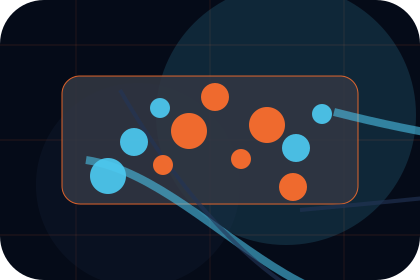
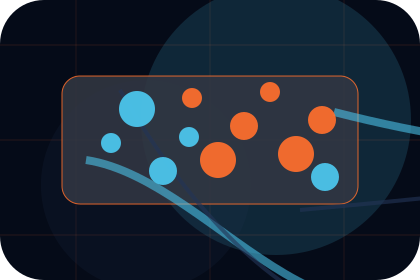
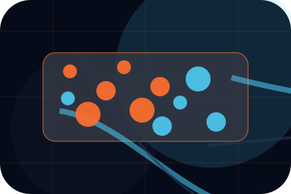
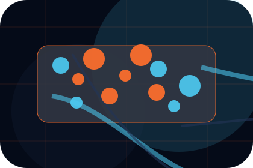
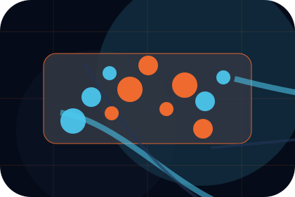
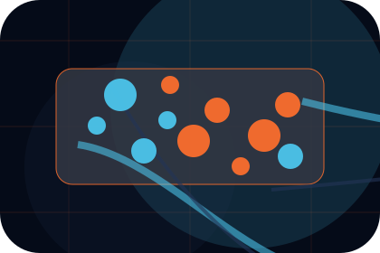
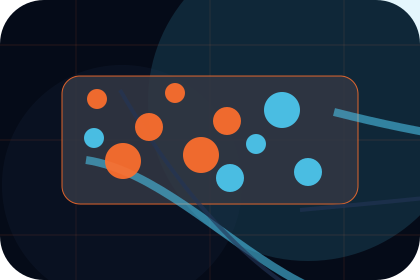
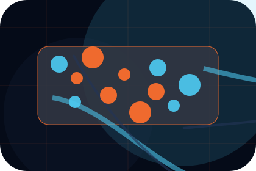
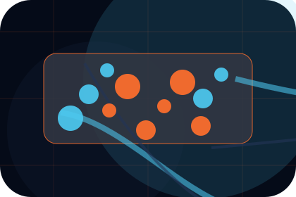

Company
Open the company route for leadership, values, credentials so aviation, aerospace & air services visitors can compare context, proof, and next steps.
Open CompanyHome / 01
Home opens as a clear aviation decision hub: what Aero offers, who it helps, why it matters, and which route to take first.
The first screen combines positioning, proof, primary action, and fast internal navigation, so people can act immediately or compare the rest of the home route with context.
Aerospace velocity hero
Select the closest route and Aero keeps the next step, proof, and follow-up expectation aligned with safety and premium reliability.

Site atlas
This homepage is the working index for aviation, aerospace & air services: it explains the offer, points to every deeper page, and keeps the final action visible without making the visitor hunt.
An aviation site with speed-led hero, aircraft spec cards, route modules, safety proof, and charter enquiry. The page links problem, promise, services, process, proof, questions, support, legal routes, and conversion paths into one clear decision map.
Open the company route for leadership, values, credentials so aviation, aerospace & air services visitors can compare context, proof, and next steps.
Open CompanyOpen the services route for charter, maintenance, training so aviation, aerospace & air services visitors can compare context, proof, and next steps.
Open ServicesOpen the fleet route for aircraft, capacity, range so aviation, aerospace & air services visitors can compare context, proof, and next steps.
Open FleetOpen the safety route for culture, training, audits so aviation, aerospace & air services visitors can compare context, proof, and next steps.
Open SafetyOpen the operations route for routes, scheduling, ground so aviation, aerospace & air services visitors can compare context, proof, and next steps.
Open OperationsOpen the compliance route for authorities, documents, audits so aviation, aerospace & air services visitors can compare context, proof, and next steps.
Open ComplianceOpen the projects route for aerospace, engineering, logistics so aviation, aerospace & air services visitors can compare context, proof, and next steps.
Open ProjectsOpen the careers route for roles, pilots, engineers so aviation, aerospace & air services visitors can compare context, proof, and next steps.
Open CareersOpen the contact route for charter, technical, partners so aviation, aerospace & air services visitors can compare context, proof, and next steps.
Open ContactReview the local assets, icons, OG images, and static handoff materials used by Aero.
Open Asset SystemUse the full sitemap to recover any route and verify the whole Aero structure.
Open SitemapRead the privacy route before sending personal details through the static form.
Open PrivacyManage consent and understand the privacy-safe analytics approach.
Open CookiesHome / 02
Need frames the pressure behind the visit, then connects it to a practical path visitors can recognise and act on.
The copy avoids blame and panic. It shows the common friction, the practical consequence, and the calmer route Aero uses to move people forward.
Open CompanyNeed names the real friction visitors bring to the home route, so the page feels relevant before any claim is made.
The copy connects that friction to practical risk, delay, confusion, or missed opportunity without exaggerating it.
The final cue moves visitors toward a clearer route instead of leaving them with the problem alone.
Home / 03
Safety adds dark context to the home route, using the supersonic operations deck structure to support safety and premium reliability before visitors choose a next step.
Aero uses fleet specification cards and focused copy to make the decision easier to scan, aligning the section with safety and premium reliability rather than filling space.
Open Services
Safety gives the page a specific angle instead of repeating the navigation label.

The fleet specification cards show what to compare, what to avoid, and what matters most for aviation, aerospace & air services visitors.

The final cue points to a useful internal route so the section keeps the journey moving.
Home / 04
Promise defines the better state Aero is built to create, with enough detail to make the promise believable.
An aviation site with speed-led hero, aircraft spec cards, route modules, safety proof, and charter enquiry. The section grounds that direction in concrete benefits, visible tradeoffs, and a next route visitors can use when the promise feels relevant.
Open FleetPromise defines what becomes clearer, easier, or safer when Aero is the chosen route.
The benefit is tied to safety and premium reliability, not a vague quality claim.

Visitors get a linked path to compare the promise against services, standards, or examples.
Home / 05
Services explains the practical scope, best-fit situations, and expected outcome so aviation visitors can compare options without decoding jargon.
The section keeps the offer concrete: what is included, who it is best for, what decision it supports, and which linked route gives the deeper detail.
Open ServicesWho should use services and when it belongs in the home journey.
The practical benefit visitors should expect after choosing this route.

Where to compare details, pricing, support, or contact options before committing.
Aerospace velocity hero
Select the closest route and Aero keeps the next step, proof, and follow-up expectation aligned with safety and premium reliability.
Home / 06
Fleet explains the practical scope, best-fit situations, and expected outcome so aviation visitors can compare options without decoding jargon.
The section keeps the offer concrete: what is included, who it is best for, what decision it supports, and which linked route gives the deeper detail.
Open OperationsAero structures fleet around best fit, what changes, and a clear next route so visitors can compare the block quickly before they request a charter.
Request CharterHome / 07
Operations adds dark context to the home route, using the supersonic operations deck structure to support safety and premium reliability before visitors choose a next step.
Aero uses fleet specification cards and focused copy to make the decision easier to scan, aligning the section with safety and premium reliability rather than filling space.
Open ComplianceOperations gives the page a specific angle instead of repeating the navigation label.

The fleet specification cards show what to compare, what to avoid, and what matters most for aviation, aerospace & air services visitors.

The final cue points to a useful internal route so the section keeps the journey moving.
Home / 08
Compliance gives the proof layer for home: standards, evidence, and reassurance that make the next decision feel grounded.
Instead of relying on vague claims, Aero presents visible standards, process cues, and proof artifacts that help aviation visitors judge fit.
Open ProjectsVisible proof that helps visitors believe the claims behind compliance.
Home / 09
Questions handles buying doubts directly so visitors can understand timing, fit, limits, and the safest next step.
Answers are short by design: enough to remove hesitation, not so much that the page turns into documentation before the visitor can act.
Open ContactQuestions gives the page a specific angle instead of repeating the navigation label.

The fleet specification cards show what to compare, what to avoid, and what matters most for aviation, aerospace & air services visitors.

The final cue points to a useful internal route so the section keeps the journey moving.
Aero starts with a focused intake so the recommendation matches the visitor's context, risk, timing, and readiness.
Each route explains inclusions, exclusions, documents, timing, and the decision points that affect final delivery.
The theme uses supersonic operations deck, fleet specification cards, and fleet specs tabs, safety checklist, charter route form rather than a shared template rhythm.
Aerospace velocity hero
Select the closest route and Aero keeps the next step, proof, and follow-up expectation aligned with safety and premium reliability.
Information is provided for planning and should be reviewed for the final client, location, and operating rules.
Home / 10
Aero closes the home route with a clear action, a quick reminder of the value, and a low-friction way to request a charter.
Visitors who are ready can use the primary action. Visitors who are still comparing can scan the section links, proof, and support routes before they request a charter.
Request CharterThe final block keeps the choice simple: act now, compare one more proof route, or send enough detail for a focused response.
Request Chartersafety and premium reliability
An aviation site with speed-led hero, aircraft spec cards, route modules, safety proof, and charter enquiry. Home ends with a direct path to request a charter, plus enough context for visitors who still need to compare.
 Request Charter
Request Charter